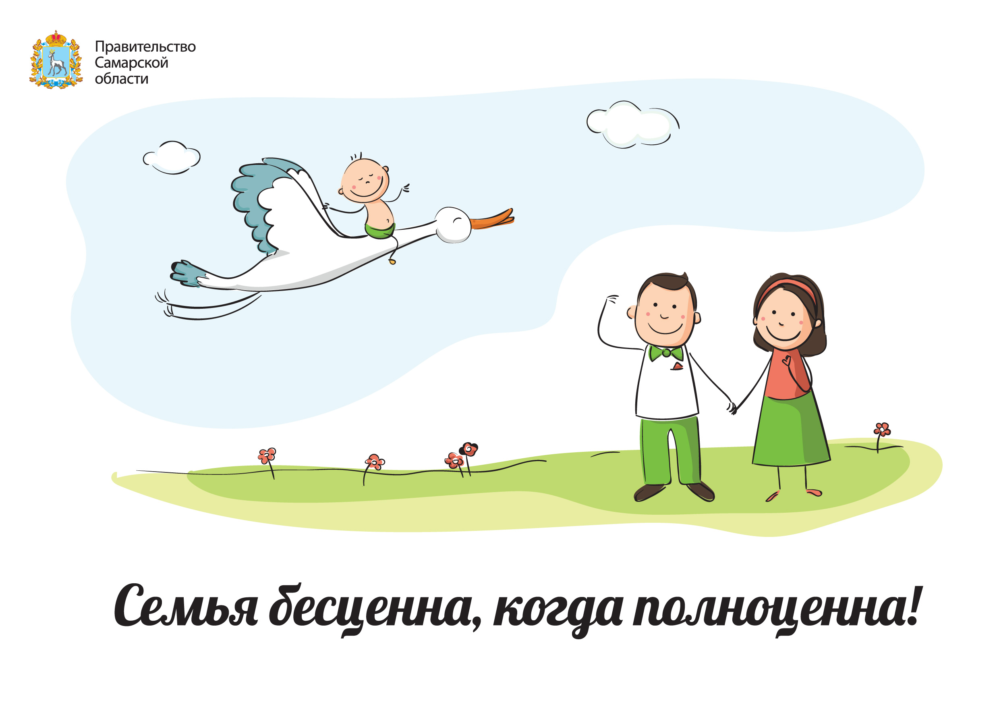
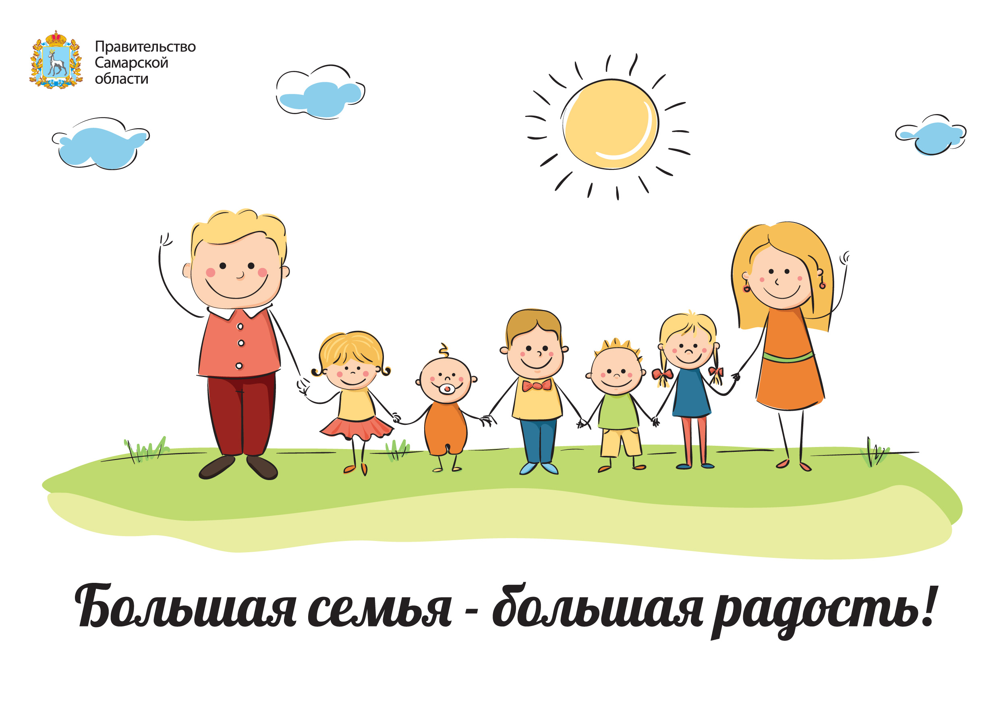
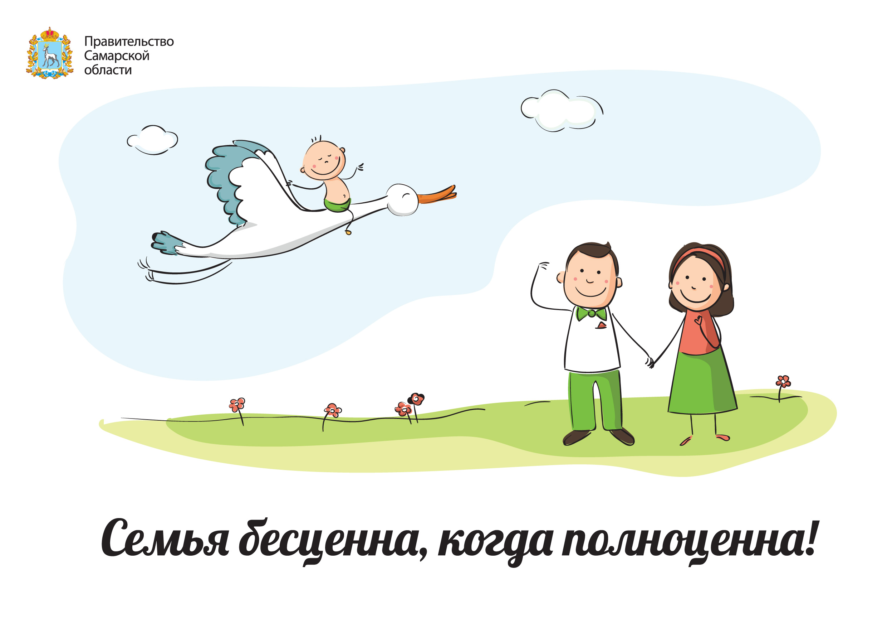
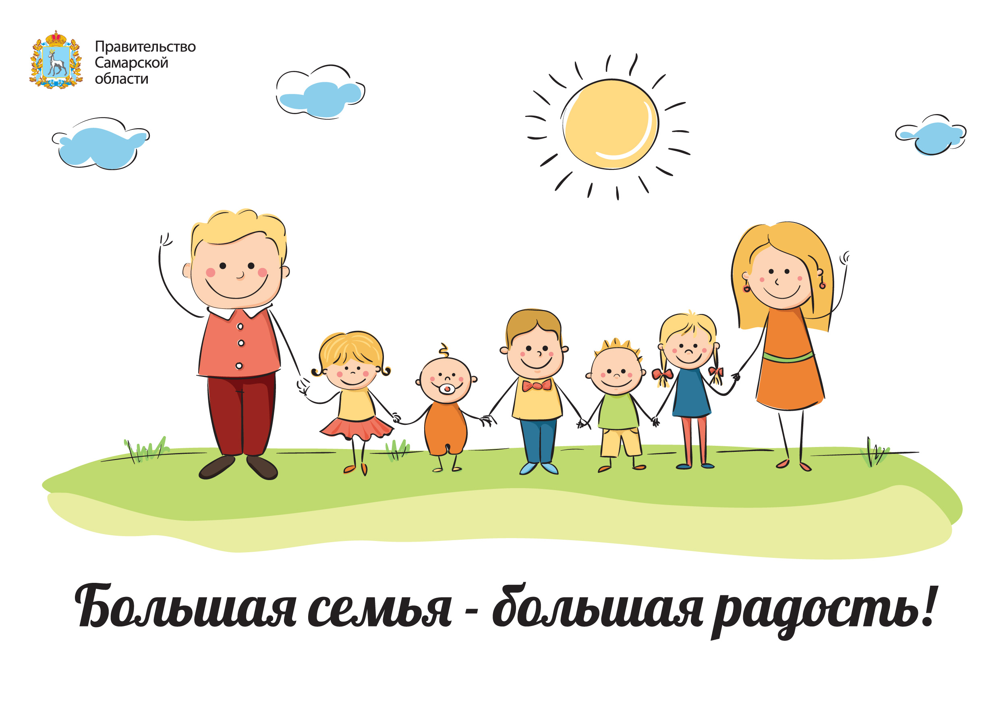

Значение семьи в жизни каждого человека трудно переоценить. Семья дает нам опору, поддержку, тепло, навыки
общения, первые уроки любви. Она помогает нам развивать характер, учит преодолевать трудности и т. д.
И чем семья благополучнее, чем больше в ней уделяется внимания каждому члену семьи и малышу в том числе,
тем увереннее ребенок будет чувствовать себя в жизни.
Безусловно, самую важную роль в жизни каждого ребенка играют родители. Им дети подражают, на них хотят
быть похожими. Однако отцовская и материнская любовь к ребенку не одинакова.
Любовь матери — это безусловная любовь. Мама готова принять своего ребенка любого (хорошего или плохого,
здорового и больного и т. д.) и любит его только за то, что он есть. Неспособность матери так любить своего
ребенка негативно сказывается на формировании его чувства собственного достоинства, самосознании ребенка и
его способности любить. Особенно пагубно отсутствие безусловной любви матери для девочек. Это формирует
ощущение одиночества и неуверенности в отношениях со сверстниками и взрослыми. Также результатом недостаточной
любви в детстве или излишней требовательности матери может стать наличие заниженной самооценки уже у взрослой
женщины. Также результатом недостаточной любви в детстве или излишней требовательности матери может стать
наличие заниженной самооценки уже у взрослой женщины.
Однако для формирующейся личности не менее, а возможно и более губительна и чрезмерная любовь матери,
самопожертвование. Те девочки, чьи мамы жертвуют личной жизнью ради них, вырастут либо эгоистками, не
способными любить, либо зависимыми и несамостоятельными. В любом случае ни то ни другое не будет способствовать
их счастливой и успешной жизни.
Любовь отца не такая безусловная как материнская любовь, она более требовательна, однако не менее необходимая
для развития ребенка. К маме ребенок приходит чтобы его пожалели, поделиться с ней своими печалями и радостями.
А с отцом он делится своими достижениями, ждет от него похвалы и одобрения, обращается за защитой. Для девочки
папа также крайне важен, она ориентируется на его мнение в оценке ее женских качеств. Таким образом, женский
характер в детском возрасте формируется благодаря двум составляющим – примеру матери и оценке отца.
И так, отношения ребенка с мамой основываются на чувствах, а отношения с отцом — на поступках. Однако это не
означает, что папа не может любить ребенка просто так или, что мама не должна давать оценку его достижениям и
поступкам. Довольно не просто разобраться в сложных отношениях детей и родителей. Можно только определить, что
результатом любви родителей является ощущение ребенком чувства собственного достоинства, семейной близости,
желания быть похожим на них.
Для формирования и развития личности ребенка важную роль играют не только его отношения с родителями, но и то,
как родители относятся друг к другу. Так как именно в детстве формируется модель будущей семейной жизни. Глядя
на отношение родителей друг к другу девочка создает идеальную модель собственной будущей семьи. Уже с раннего
детства она знает, что в семье должна делать женщина, а что мужчина, как родители должны относиться к своим детям.
Безусловно, со временем эта идеальная модель будет изменяться, но меняться будут лишь некоторые ее черты, а суть
останется прежней. Интересен тот факт, что довольно часто девочки, которые выросли в благополучных семьях, выходят
замуж за мужчин похожих на их отцов, причем не только по характеру, но и внешне.
Сегодня растет число “неполных” семей, то есть с одним родителем (мамой или папой). У детей, которые выросли
в таких семьях, могут возникнуть определенные проблемы в будущей семейной жизни и отношениях с противоположным
полом. Кроме того, это может наложить отпечаток на развитие личности ребенка и вызвать некоторые особенности в
его характере. Хотя, безусловно, детям лучше жить в неполной семье, чем в полной, но конфликтной.
Одиноким родителям приходится выступать в роли кормильца, воспитателя и домохозяйки одновременно. Они сильнее
переживают из-за неприятностей случающихся у ребенка, чаще испытывают материальные трудности – все это, конечно же,
не способствует созданию оптимальных условий для его воспитания.
Раньше считалось, что мальчики страдают больше из-за отсутствия в семье отца, чем девочки. Однако последние
исследования показывают, что девочки выросшие без отца испытывают определенные трудности в общении с противоположным
полом, некоторые чувствуют себя дискомфортно в присутствии мужчин. Девочкам, лишившимся папы в подростковом возрасте
(из-за развода) иногда становится свойственна агрессивность, неразборчивость в сексуальных связях.
Дети, которые растут только с одним из родителей, не видят отношений между мужчиной и женщиной внутри семьи
и это искажает их представления о семейной жизни.
Ребенок получает дополнительные психические травмы, когда родители расходятся и начинают делить ребенка, позволяя
себе нелестно отзываться друг о друге в его присутствии. Малыш в этой ситуации не может сделать выбор между
мамой и папой и иногда винит себя в случившемся (в разводе родителей).
В воспитании ребенка родители дополняют друг друга, каждый из них имеет свою индивидуальность. И когда ребенок
теряет одного из них, то первому приходится брать на себя функции второго. Конечно, это создает некоторые сложности
в отношениях с ребенком, но жизнь показывает, что многие мамы справляются с отведенной им ролью. К тому же практика
показывает, что дети, которые росли только с мамой намного лучше приспособлены к жизни, чем те дети, которые росли
в полной семье в атмосфере ненависти между родителями. Поэтому если выбирать между воспитанием в полной,
но конфликтной семье и неполной, то неполная семья, безусловно, будет меньшим злом.
Автор статьи: психолог Таразевич Е.М.
 


